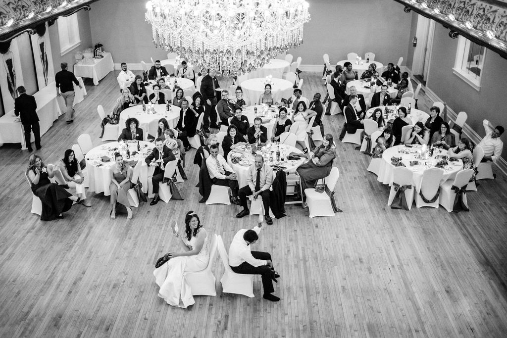
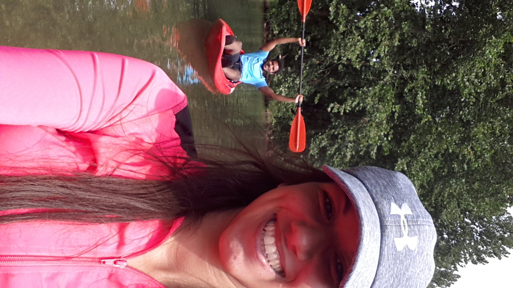
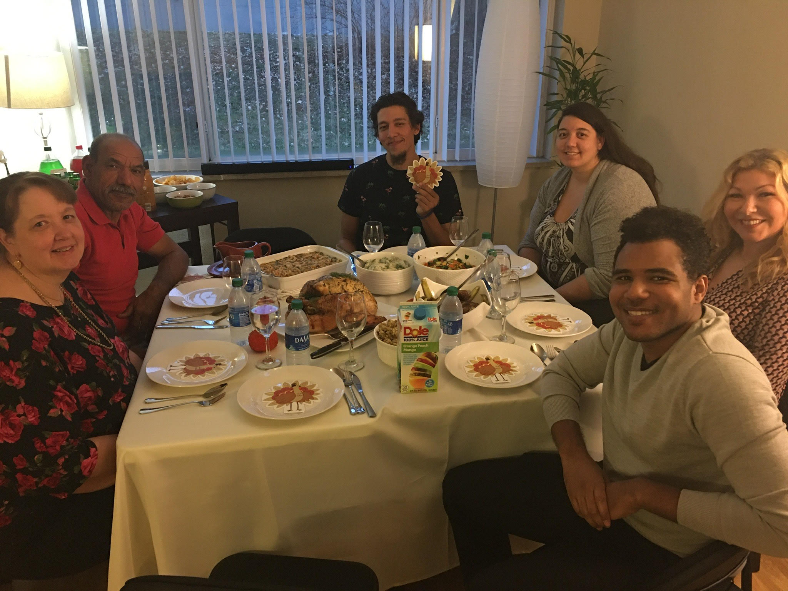
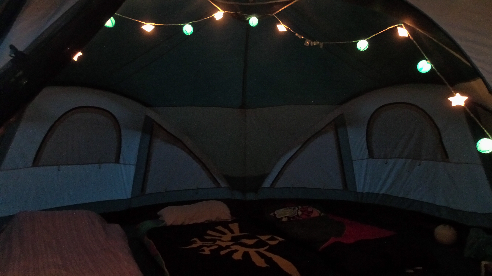
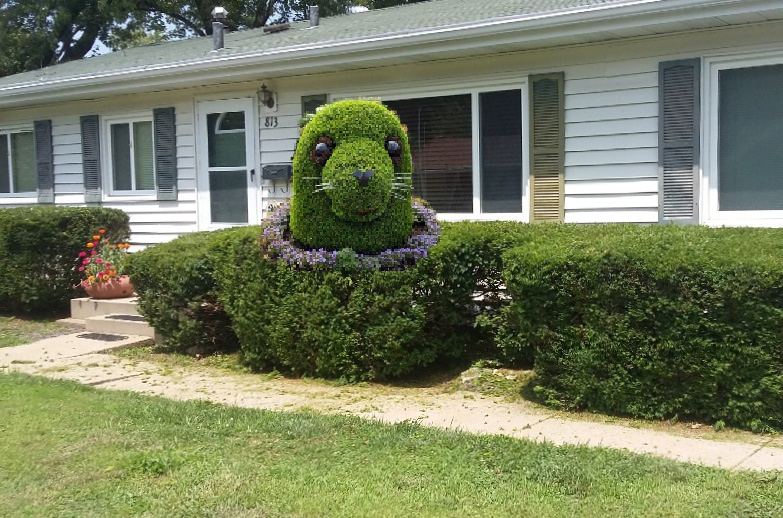
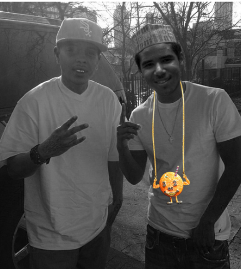

Life is a Journey
As life gets busier, it's easy to forget the memories that make it all worth it Especially the laughs, the smiles, and the hugs. This is a page to remind me what an amazing life I've lived so far :)
Husband
I recently got married in April 2019 to Naseem. I love finding time to spend with him. We absolutely love Forest Park and try to go there when we get the chance. If we aren't found there, we are probably at one of our go to restaurants: Sameems, Shu Feng, or Chef Ma's. We also enjoy lifting weights together at the gym or we can be found at home, watching Anime and smoking a hookah.

Naseem and I at our wedding on April 27th, 2019. In this picture we are playing the 'shoe game.'

Naseem and I at Cahokia Mounds for my Birthday

Naseem and I on an 18 mile kayak trip. It was his first time kayaking!!
Family
My family includes my Mom, Dad, sister (who is 11 months younger than me), and brother (who is 3 years older). I also have an amazing Mother in law now as well!

Naseem and I hosted our first Thanksgiving in 2019

My sister, Shaala, and I on Egmont Key Island near Clearwater beach. It was an Island that was only a mile long. When we were on the island, snorkeling, a fire erupted and we had to be evacuated.

My handsome nephew, Omar, born on July 17, 2017. He is 2 now, and the life of our family.

Naseem, my mother in law (Natalya), and I at Naseem's boss' brother's wedding.
Trips
I absolutely love to travel and try to do so once a year. Whether it be with friends or family, I just love to explore!

My cousin, sister and I went camping at Meramac State Park.

Me at Red Rocks Ampithetre November 2018.

Naseem and I's view from our air bnb in Miami June 2017.

St. Augustine, FL for my Bachlorette Party March 2019.
Photoshop Fun
I enjoy photoshopping pictures for a laugh.

My coworker heard of the cheerio challenge and wanted me to photoshop this for her neice.

My dad asked if I finished cutting the bushes. This is what I sent him when I was done. My masterpiece.

Naseem loves O.J. the Juiceman and I surprised him with this picture of him 'meeting' O.J.